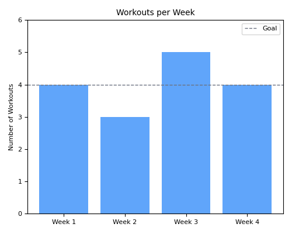
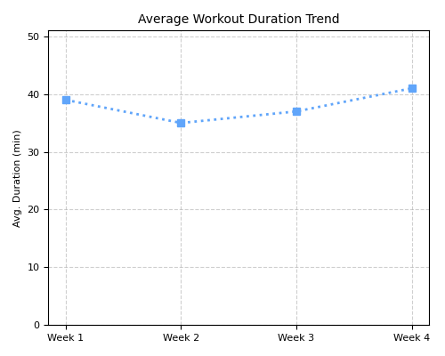
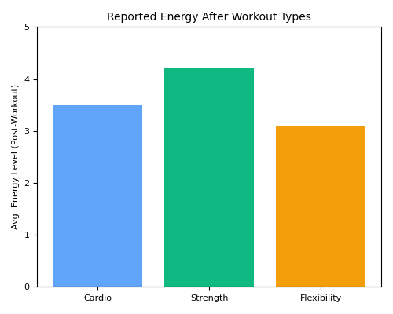
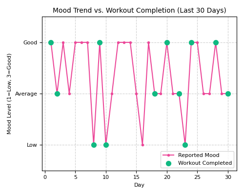

Your Progress & Analysis
Reflect on your journey. Understanding patterns and how you feel can empower your next steps.
Workout Trends & Consistency
Visualizing your activity patterns over the last month.

Workout Frequency - Last 4 Weeks

Average Workout Duration Trends
Key Observations:
You've been most consistent with workouts scheduled in the morning.
You tend to complete shorter (~20-30 min) workouts more often than longer ones. This aligns with your preference!
We noticed a dip in frequency during the week you reported high stress. It's okay to adjust during busy times!
Connecting Feelings & Fitness
Let's explore how workouts impact your well-being, based on your feedback.

Reported Energy Levels After Different Workout Types

Mood Trends vs. Workout Completion (Last 30 Days)
What We're Seeing:
You often report feeling 'more energetic' after completing strength-focused sessions.
Completing workouts, even shorter ones, seems to correlate positively with reporting a 'Good' or 'Great' mood afterwards.
How Your Plan Adapts (Transparency)
FitSync learns from your feedback. Here are examples of how we've adjusted your plan recently:
-
Feedback: Knee discomfort during lungesAction Taken: Substituted lunges with glute bridges this week to reduce knee stress while still targeting similar muscles.
-
Feedback: 'More Tired' after Monday, prefers 'lighter workout'Action Taken: Tuesday's suggested plan was adjusted to focus on Gentle Movement & Flexibility instead of moderate cardio.
-
Progress: Completed all workouts, felt 'Energized'Next Step: Based on this, next week's plan might slightly increase duration or introduce a new exercise, keeping your preferences in mind. We'll check in!
These adjustments aim to keep your plan effective, safe, and aligned with how you feel.
Progress Towards Your Goal: 'Build a Habit'
Let's see how you're tracking towards your primary goal.
Keep Going! Your consistency is trending upwards. Sticking to the schedule, even with shorter or modified workouts on tough days, is building a strong foundation.
Recent Milestones & Achievements
Celebrating your progress along the way!